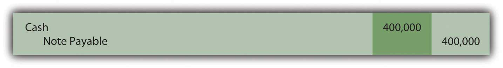

At the end of this section, students should be able to meet the following objectives:
Question: Notes and bonds are contracts used in the borrowing of money. They are undoubtedly produced with great care by attorneys knowledgeable in contract law. What legal terms are typically included in debt instruments?
Answer: The specific terms written into a contract or indenture vary depending on what a debtor is willing to promise in order to entice a creditor to turn over needed financial resources. Some of the most common are as follows.
Face value or maturity valueAmount of a note or bond to be repaid at the end of the contract; it serves as the basis for computing interest payments and is also known as face value.. The noteA written contract to convey money as a loan at a specified interest rate and repayment schedule between two parties. or bondA written contract created by a debtor that is sold (often to members of the general public) to raise money. will specify the amount to be repaid at the end of the contract time. A $1,000 bond, for example, has a face value of $1,000—that amount is to be paid on a designated maturity date. Thus, based on the information presented previously from Marriott’s financial statements, that company will eventually be required to pay $350 million to the holders of its Series I notes.
Payment pattern of the face value or maturity value. With some debts, no part of the face value is scheduled for repayment until the conclusion of the contract period. These are often referred to as term notes or term bondsA type of debt instrument where interest is paid at regular time intervals with the entire maturity value due at the end of the contract period.. The debtor pays the entire amount (sometimes referred to as a balloon payment) when the contract reaches the end of its term. Based on the information provided, Marriott will be required to pay the $350 million face value of its Series I notes during 2017.
Other debts, serial debtsA type of debt instrument where a set amount is paid each period to cover both interest and a portion of the maturity value; home mortgages and automobile loans are common examples., require serial payments where a portion of the face value is paid periodically over time. Home mortgages, for example, are commonly structured as serial notes. Part of each scheduled payment reduces the face value of the obligation so that no large amount remains to be paid on the maturity date.
Notes and bonds can also be set up to allow the debtor to choose to repay part or all of the face value prior to the due date. Such debts are often referred to as “callable.” This feature is popular because it permits refinancing if interest rates fall. A new loan is obtained at a cheap interest rate with the money used to pay off old notes or bonds that charge high interest rates. Sometimes a penalty payment is required if a debt is paid prematurely.
Interest rate. Creditors require the promise of interest before they are willing to risk loaning money to a debtor. Therefore, within the debt contract, a stated cash interest rateThe rate for interest on a debt can be identified by any of several terms. Cash rate, stated rate, contract rate, and coupon rate are all examples of the same information: the rate of interest to be paid by the debtor at specified times. is normally included. A loan that is identified as having a $100,000 face value with a stated annual interest rate of 5 percent lets both parties know that $5,000 in interest ($100,000 × 5 percent) will be conveyed from debtor to creditor each year.
Therefore, to service the Series I notes issued above, Marriott will be required to make annual interest payments of $22,312,500 ($350 million face value × the stated interest rateRate established in a debt contract to be paid by the debtor usually at specified time intervals; it is also called cash rate, contract rate or coupon rate. of 6.375 percent).
Interest payment dates. The stated amount of interest is paid on the dates identified in the contract. Payments can range from monthly to quarterly to semiannually to annually to the final day of the debt term.
Security. Many companies are not able to borrow money (or cannot borrow money without paying a steep rate of interest) unless some additional security is provided for the creditor. Any reduction of risk makes a note or bond instrument more appealing to potential lenders. For example, some loans (often dealing with the purchase of real estate) are mortgage agreements that provide the creditor with an interest in identified property. Although specific rights can vary based on state law and the wording of the contract, this type of security usually allows the creditor to repossess the property or force its liquidation if the debtor fails to make payments in a timely manner. The recent downturn in the housing market has seen many debtor defaults that have led to bank foreclosures on homes across the country.
A debentureA debt contract that does not contain any type of security for the creditor; these contracts are usually offered by debtors that are considered financially strong so that no additional security is required by the creditor to reduce the chance of loss. is a debt contract that does not contain any security. The debtor is viewed as so financially strong that money can be obtained at a reasonable interest rate without having to add extra security agreements to the contract.
CovenantsPromises made by the debtor in a debt contract to help ensure that sufficient money will be available to make required payments at the scheduled times. and other terms. Notes and bonds can contain an almost infinite list of other agreements. Many of these are promises made by the debtor to help ensure that money will be available to make required payments. For example, the debtor might agree to limit dividend payments until the liability is extinguished, keep its current ratio above a minimum standard, or limit the amount of other debts that it will incur.
Debts can also be convertible so that the creditor can swap them for something else of value (often the capital stock of the debtor) if that seems a prudent move. The notes to the financial statements for VeriSign Inc. for December 31, 2008, and the year then ended describe one such noncurrent liability. “The Convertible Debentures are initially convertible, subject to certain conditions, into shares of the Company common stock at a conversion rate of 29.0968 shares of common stock per $1,000 principal amount of Convertible Debentures, representing an initial effective conversion price of approximately $34.37 per share of common stock.”
Question: The financial reporting of a debt contract appears to be fairly straightforward. Assume, for example, that Brisbane Company borrows $400,000 in cash from a local bank on May 1, Year One. The face value of this loan is to be repaid in exactly five years. In the interim, interest payments at an annual rate of 6 percent will be made every six months beginning on November 1, Year One. What journal entries are appropriate to record a debt issued for a cash amount that is equal to the face value of the contract?
Answer: Brisbane receives $400,000 in cash but also accepts a noncurrent liability for the same amount.
Figure 14.1 May 1, Year One—Cash of $400,000 Borrowed on Long-term Note Payable
The first semiannual interest payment will be made on November 1, Year One. Because the 6 percent interest rate stated in the contract is for a full year, it must be halved to calculate the payment that covers the six-month intervals. Each of these cash disbursements is for $12,000 which is the $400,000 face value × the 6 percent annual stated interest rate × 1/2 year.
Figure 14.2 November 1, Year One—Payment of Interest for Six Months

By December 31, Year One, interest for two additional months (November and December) has accrued. This amount ($4,000 or $400,000 × 6 percent × 2/12 year) is recognized so that the financial statements prepared at that time will be presented fairly. No transaction occurs on that date but adjustment is necessary when preparing the Year One statements to report both the expense and the liability for these two months.
Figure 14.3 December 31, Year One—Accrual of Interest for Two Months

When the next $12,000 interest payment is made by Brisbane on May 1, Year Two, the recorded $4,000 liability is extinguished and interest for four additional months (January through April) is recognized. The appropriate expense for this period is $8,000 or $400,000 × 6 percent × 4/12 year. Mechanically, this payment could be recorded in more than one way but the following journal entry is probably the easiest to follow. Interest expense for the first two months was recorded in Year One with interest for the next four months recorded here in Year Two.
Figure 14.4 May 1, Year Two—Payment of Interest for Six Months
The interest payments and the recording process will continue in this same way until all five years have passed and the face value is paid.
Except for the initial entry, these events would be recorded in an identical fashion if Brisbane had signed this same note to acquire an asset such as a piece of machinery. No cash is involved in the beginning; the debt is incurred to acquire the property directly. The only reporting difference is that the asset replaces cash in the first journal entry above.
Link to multiple-choice question for practice purposes: http://www.quia.com/quiz/2092978.html
Question: Bonds can be sold to a group of known investors or to the public in general. Often, companies will print bond indentures but not issue them until the money is needed. Thus, many bonds are sold on a day that falls between two interest dates. Payment must still be made to creditors as specified regardless of the length of time that the debt has been outstanding. If an interest payment is required by the contract, the debtor is legally obligated.
For example, assume that the Brisbane Company plans to issue bonds with a face value of $400,000 to a consortium of twenty wealthy individuals. As with the previous note arranged with the bank, these bonds pay a 6 percent annual interest rate with payments every May 1 and November 1. However, this sale is not finalized until October 1, Year One. The first six-month interest payment is still required on November 1 as stated in the contract. After just one month, the debtor will be forced to pay interest for six months. That is not fair and Brisbane would be foolish to agree to this arrangement. How does a company that issues a bond between interest payment dates ensure that the transaction is fair to both parties?
Answer: The sale of a bond between interest dates is extremely common. Thus, a standard system of aligning the first interest payment with the time that the debt has been outstanding is necessary. Brisbane will have to pay interest for six months on November 1 even though the cash proceeds from the bond have only been held for one month. At that time, the creditor receives interest for an extra five months.
Consequently, such bonds are normally issued for a stated amount plus accrued interest. The accrued interest is measured from the previous payment date and charged to the buyer. Later, when the first interest payment is made, the net effect reflects just the time that the bond has been outstanding. If issued on October 1, Year One, the creditors should pay for the bonds plus five months of accrued interest. Then, when Brisbane makes the first required interest payment on November 1 for six months, the net effect is interest for one month—the period since the date of issuance (six months minus five months).
Assume that the creditors buy these bonds on October 1, Year One, for face value plus accrued interest. Because five months have passed since the previous interest date (May 1), interest accrued on the bond as of the issuance date is $400,000 × 6 percent × 5/12 year or $10,000. The creditors pay $400,000 for the bond and an additional $10,000 for the accrued interest to that date. Once again, the actual recording can be made in more than one way but the following seems easiest.
Figure 14.5 Issued Bond on October 1 at Face Value plus Accrued Interest Recognized for Five Months

After one more month passes, Brisbane makes the first interest payment of $12,000. However, interest expense of only $2,000 is actually recognized in the entry below. That is the appropriate amount of interest for one month ($400,000 × 6 percent × 1/12 year) to reflect the period that the bond has been outstanding. Interest of $10,000 for five months was collected initially; interest of $12,000 was paid for the entire six months; interest expense of $2,000 is the net result for that one month.
Figure 14.6 November 1, Year One—Payment of First Interest Payment

After this entry, the recording continues on following the same manner as the previous example for the note payable.
Link to multiple-choice question for practice purposes: http://www.quia.com/quiz/2092979.html
Bond and note contracts include numerous terms to define the specific rights of both debtor and creditor. The face value and the payment patterns should be identified in these indentures as well as cash interest amounts and dates. Security agreements and other covenants are also commonly included. For debts that are issued at face value, interest is recorded as it is paid and also at the end of the year to reflect any accrued amount. Bonds are frequently issued between interest dates so an adjustment in the cash price must be made as well as in the recording of the first interest payment.